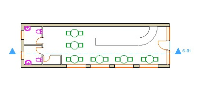
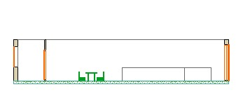

Soluzione 5
Proposta di una soluzione progettuale per un locale/bar di dimensioni 4m x 15m che preveda:
- l'ingresso da uno dei due lati corti attraverso una parete vetrata >
- un bancone lungo almeno 4 metri
- una postazione per la cassa (inclusa nel bancone o autonoma)
- 4 tavolini con almeno due sedie ciascuno
- servizi igienici
- un piccolo spazio di deposito/sgabuzzino
Pianta

Sezione

Ipotetica localizzazione del locale